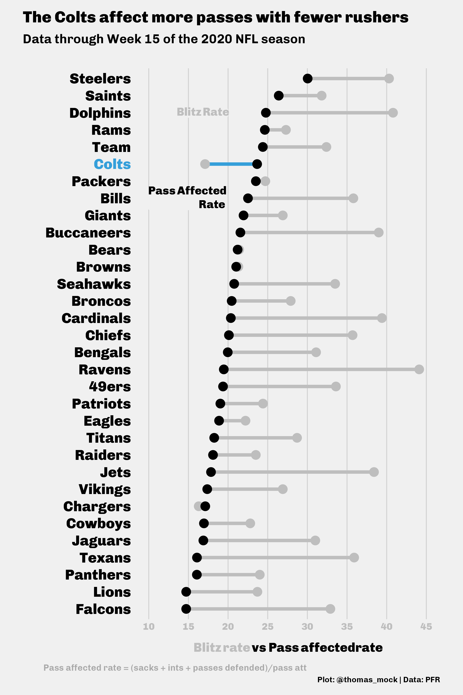

Graphs for Communication
ggplot2 is an R package for producing statistical graphics, and is an implementation of the Grammar of Graphics by Leland Wilkinson. As such the primary way that folks use ggplot2 initially is for robust, fast, and easy exploratory data analysis or the creation of scientific/statistical plots while analyzing data. Here the primary use-case is for the data scientist themself, and the quick iteration of graphs. Relatively little time is spent on adjusting the theme or on making the graph beautiful as it may be ephemeral, or simply a visual check of the underlying relationships.
The next stage in many analyses is creating a graphic primarily intended for others to consume. At this point, the graphic needs to be more engaging, and often needs to be more focused on telling a story or reinforcing some point that you are trying to present from the underlying data.
In this blogpost, Ill be covering some example themes, how to create and apply a theme, and then walk through some real life applications. Ill leave larger color theory, and creating your own ggplot2 color scales for a future blogpost.
Themes
ggplot2 is remarkably extensible and customizable both through specific graphical components (geom_, scale_, aes, etc) or by theme components (grid lines, background colors, fonts, etc). There is also the concept of fully established themes which change many theme components at once.
First, well get some data and load our libraries of interest.
Were returning some data on NFL win rates, playoff seeding, and point differentials (ie difference between points given up and points scored).
nfl_stand <- 2014:2020 %>%
map_dfr(get_nfl_standings)
diff_df <- nfl_stand %>%
arrange(year, conf, desc(win_percent)) %>%
select(year, conf, team_name, abb_name, logos, win_percent, differential)
diff_df
# A tibble: 224 x 7
year conf team_name abb_name logos win_percent differential
<int> <chr> <chr> <chr> <chr> <dbl> <dbl>
1 2014 AFC Patriots NE https://a. 0.75 155
2 2014 AFC Broncos DEN https://a. 0.75 128
3 2014 AFC Steelers PIT https://a. 0.688 68
4 2014 AFC Colts IND https://a. 0.688 89
5 2014 AFC Bengals CIN https://a. 0.656 21
6 2014 AFC Ravens BAL https://a. 0.625 107
7 2014 AFC Chiefs KC https://a. 0.562 72
8 2014 AFC Texans HOU https://a. 0.562 65
9 2014 AFC Chargers SD https://a. 0.562 0
10 2014 AFC Bills BUF https://a. 0.562 54
# with 214 more rowstheme_grey()
The default ggplot2 theme is theme_grey(), its major components are a grey panel.background, white panel.grid lines, coupled with a white plot.background, black text and a default black color for geom_ components.
The signature ggplot2 theme with a grey background and white gridlines, designed to put the data forward yet make comparisons easy.
ggplot(diff_df, aes(x = differential, y = win_percent)) +
geom_point()

theme_minimal()
This theme drops the panel.background and no longer has the visual separation between the panel vs plot areas.
A minimalistic theme with no background annotations.
ggplot(diff_df, aes(x = differential, y = win_percent)) +
geom_point() +
theme_minimal()

theme_bw()
Its major components are a white panel.background, grey panel.grid lines, coupled with a white plot.background, black text and a default black color for geom_ components.
The classic dark-on-light ggplot2 theme. May work better for presentations displayed with a projector.
ggplot(diff_df, aes(x = differential, y = win_percent)) +
geom_point() +
theme_bw()

Other themes
There are several other themes built into ggplot2, and other packages that provide new themes. The most well-known external theme package is ggthemes, which provides a number of Data Journalism themes such as theme_few(), theme_fivethirtyeight(), theme_economist() and others.
These are implementations of very opinionated frameworks, and highlight the extensibility of the ggplot2 theme components.
ggplot(diff_df, aes(x = differential, y = win_percent)) +
geom_point() +
ggthemes::theme_fivethirtyeight()

ggplot(diff_df, aes(x = differential, y = win_percent)) +
geom_point() +
ggthemes::theme_economist()

ggplot2 theme components
You can always change specific theme components one at a time or in conjunction with a proper theme_. For example, we can apply the theme_fivethirtyeight() theme and then change one of the theme components individually.
ggplot(diff_df, aes(x = differential, y = win_percent)) +
geom_point() +
ggthemes::theme_fivethirtyeight() +
theme(
panel.grid.major = element_line(color = "red")
)

There are dozens of customizable theme components. They are outlined in the ggplot2 documentation. A deep walkthrough of a lot of ggplot2 customizations can be found on Cedric Scherers blog. Kieran Healys Data Visualization: A practical introduction covers additional considerations for refining and customizing plots and why certain decisions are good.
ggplot2 theme elements
For each of the theme components there are one of a few theme elements. For example, to change the axis grid line color, youll use element_line() as in the following pseudocode:
plot_object +
theme(panel.grid.major = element_line(color = "red"))For the theme elements, there are:
- element_line() - change line element components, takes arguments like color, size, linetype (dotted, dashed, solid, etc)
element_rect()- change rectangular components like plot backgrounds, legend backgrounds, etc, takes arguments likefill,color,sizeelement_text()- change text components like axis labels, titles, and takes arguments likefamily(font family),face(bold, italics, etc),hjust/vjust(horizontal or vertical alignment),color, etcelement_blank()- completely remove an element by namemargin()- adjust margins of an element, can be used within some other theme componenets, and takes arguments oft(top),r(right),b(bottom),l(left), andunit(unit such as points, in, cm, etc)rel()- relative sizing of elements, useful for text especially, ie choosing a base font size and scaling the titles vs body fonts relative to each other
You can always refer to the ggplot2 documentation for which theme element to use, but you can also typically guess which is the right one to use by referring to the output type (ie text uses element_text(), lines use element_line(), etc).
Inspiration
For inspiration, I often find that Stealing like an artist is my favorite approach.
Your job is to collect good ideas. The more good ideas you collect, the more you can choose from to be influenced by.
Plagiarism is trying to pass someone elses work off as your own. Copying is about reverse-engineering.
With this approach, you are allowing yourself to be influenced by good work, and learning how to implement the approaches of experts while making it your own. I find that FiveThirtyEight as an organization produces great graphics and tables, and thus I take a lot of influence from their approaches with my own novel data. It helps that they do produce some of their graphics in ggplot2!
That being said, projects like #TidyTuesday or #StorytellingWithData can also give you a much more focused batch of concepts to borrow from as the focus is on applying concepts as a community with either a similar output or similar starting data.
TidyTuesday.rocks- a shiny app that collects#TidyTuesdaydataviz and lets you interact with them by a specific topic/week
A DataViz Journey
Lets begin our journey by telling two stories, and working through the refinement of plots to help tell your story.
Story one is a continuation of our data above. Were exploring the relationship between scoring points (offense), preventing the opposing team from scoring points (defense), and how this relates to wins. This is a relatively obvious story, but has some neat sub stories we can look into.
The second story will be about a specific team (the Indianapolis Colts), and how their approach to defense is effective while being very different than other teams.
Note that since this is using live data feeds, to recreate the plots exactly as they are youd need to read in the data I used below.
Point Differential
Point differential is a simple metric (points scored - points against) that is pretty predictive of overall win rate and making the playoffs. Teams that score more points than the other team typically win more games, which is fairly obvious!
However simply returning the plot below may not be as engaging to a lay audience or tell some of the nuance of what happens in individual seasons.
Data Collection and Plot
nfl_stand <- 2014:2020 %>%
map_dfr(get_nfl_standings)
nfl_stand_plot <- nfl_stand %>%
ggplot(aes(x = differential, y = win_percent)) +
geom_point() +
geom_smooth(method = "lm")
nfl_stand_plot

That plot told us there is a fairly linear response between having a larger point differential and having a better win rate, but does winning games and scoring more points always guarantee a playoff spot or even possibly missing the playoffs?
Playoff Teams
Lets add a color that shows where playoff teams fit into the big picture. Note that in 2020 teams with a ranking of 7th or better make the playoffs vs previously only the top 6 teams made it.
Add Color
nfl_stand %>%
mutate(
color = case_when(
year < 2020 & playoff_seed <= 6 ~ "blue",
year == 2020 & playoff_seed <= 7 ~ "blue",
TRUE ~ "red"
)
) %>%
ggplot(aes(x = differential, y = win_percent)) +
geom_vline(xintercept = 0, size = 0.75, color = "#737373") +
geom_point(aes(color = color))

Add some color
Uh-oh what happened with the colors??? We told it to be blue and red but it reversed the colors!
We needed a scale_color_identity() call. While were adding color, lets also add some color commentary of the axes, a title, and a source caption. There we go! Now we can show that: Playoff teams typically have a positive point differential. Ill also bump up the size of the points to bump up the ink to white ratio and some transparency (alpha) so that overlapping points are clear.
Lastly, Ive added a vertical line at the 0 mark to clearly indicate the transition from negative to positive point differential.
Proper Colors and Text
nfl_stand %>%
mutate(
color = case_when(
year < 2020 & playoff_seed <= 6 ~ "blue",
year == 2020 & playoff_seed <= 7 ~ "blue",
TRUE ~ "red"
)
) %>%
ggplot(aes(x = differential, y = win_percent)) +
geom_vline(xintercept = 0, size = 0.75, color = "#737373") +
geom_point(
aes(color = color),
size = 3, alpha = 0.8
) +
scale_color_identity() +
labs(x = "Points Differential", y = "Win Percent",
title = "Playoff teams typically have a positive point differential",
subtitle = "Data through week 15 of the 2020 NFL Season",
caption = "Plot: @thomas_mock | Data: ESPN")

Refine labels
Now, because we dont have a legend for the colors, lets add some direct labels to indicate whats going on. Ill use ggtext to add nicely formatted color text. Note that Ive also borrowed the NFL shields blue and red hex color code to add a bit more engaging color for both the labels and points. Lastly, Ive also converted the y-axis from decimals to proper percent labels via scales::percent_format() and some better breakpoints.
This is starting to look a lot better, but Im not a huge fan of the base theme.
Refine Labels
library(ggtext)
playoff_label_scatter <- tibble(
differential = c(25,-125), y = c(0.3, 0.8),
label = c("Missed<br>Playoffs", "Made<br>Playoffs"),
color = c("#D50A0A", "#013369")
)
playoff_diff_plot <- nfl_stand %>%
mutate(
color = case_when(
year < 2020 & playoff_seed <= 6 ~ "#013369",
year == 2020 & playoff_seed <= 7 ~ "#013369",
TRUE ~ "#D50A0A"
)
) %>%
ggplot(aes(x = differential, y = win_percent)) +
geom_vline(xintercept = 0, size = 0.75, color = "#737373") +
geom_hline(yintercept = 0, size = 0.75, color = "#737373") +
geom_point(
aes(color = color),
size = 3, alpha = 0.8
) +
ggtext::geom_richtext(
data = playoff_label_scatter,
aes(x = differential, y = y, label = label, color = color),
fill = "#f0f0f0", label.color = NA, # remove background and outline
label.padding = grid::unit(rep(0, 4), "pt"), # remove padding
family = "Chivo", hjust = 0.1, fontface = "bold",
size = 8
) +
scale_color_identity() +
labs(x = "Points Differential", y = "Win Percent",
title = "Playoff teams typically have a positive point differential",
subtitle = "Data through week 15 of the 2020 NFL Season",
caption = str_to_upper("Plot: @thomas_mock | Data: ESPN")) +
scale_y_continuous(
labels = scales::percent_format(accuracy = 1),
breaks = seq(.0, 1, by = .10)
) +
scale_x_continuous(
breaks = seq(-200, 250, by = 50)
)
playoff_diff_plot

Premade themes
Now, as mentioned earlier we can use themes to change theme components in bulk. Since were interested in some FiveThirtyEight style plots, lets try the theme_fivethirtyeight() from ggthemes.
This looks relatively close to the right overall style, but we lost axis labels, and the fonts are still a bit basic. Lets try and build our own!
playoff_diff_plot +
ggthemes::theme_fivethirtyeight()

Custom Themes
There are two ways of building your own themes:
theme()- Add theme components individually
theme_?? %+replace%- Apply an existing theme and overwriting components of it
theme()
Lets first just build up the theme components, well be attempting to recreate the FiveThirtyEight theme from scratch. Im focusing on the minimal changes necessary to recreate the plotting style. We need a lightgrey background, grey gridlines, larger text with a specific font. Note that Im using systemfonts to load all my system font libraries into R.
A quick example of a FiveThirtyEight style plot:

In short, a few concepts that make up the FiveThirtyEight style guide:
- Focus on Web, ie relatively small graphics
- Light smoke-grey background with grey gridlines
- Black Plot Titles/Subtitles and Axis Labels
- Grey axis text (ie numbers on axis)
- LARGE plot titles and axis labels, with medium subtitles and axis text
- Always add a source
- Bright colors for plots
Theres a bit more fine details to what makes their plots so good but that covers the big parts well try to capture in our theme. Some of the nuance is up to the individual to enact (ie choosing fonts, specific colors, just how big to make the fonts/points/etc).
The first pass at a theme that weve created to match that style. Ive added comments as to what different theme elements change.
Custom Theme Code
theme_538 <- function(..., base_size = 12) {
theme(
# plotting components
## drop minor gridlines
panel.grid.minor = element_blank(),
# change grid lines to gray
panel.grid.major = element_line(color = "#d0d0d0"),
# fill the plot and panel spaces with grey and remove border
panel.background = element_rect(fill = "#f0f0f0", color = NA),
plot.background = element_rect(fill = "#f0f0f0", color = NA),
panel.border = element_blank(),
# remove strip background
strip.background = element_blank(),
# adjust the margins of plots and remove axis ticks
plot.margin = margin(0.5, 1, 0.5, 1, unit = "cm"),
axis.ticks = element_blank(),
# change text family, size, and adjust position of titles
text = element_text(family = "Chivo", size = base_size),
axis.text = element_text(face = "bold", color = "grey", size = base_size),
axis.title = element_text(face = "bold", size = rel(1.33)),
axis.title.x = element_text(margin = margin(0.5, 0, 0, 0, unit = "cm")),
axis.title.y = element_text(margin = margin(0, 0.5, 0, 0, unit = "cm"), angle =90),
plot.title = element_text(face = "bold", size = rel(1.67), hjust = 0),
plot.title.position = "plot",
plot.subtitle = element_text(size = 16, margin = margin(0.2, 0, 1, 0, unit = "cm"), hjust = 0),
plot.caption = element_text(size = 10, margin = margin(1, 0, 0, 0, unit = "cm"), hjust = 1),
strip.text = element_text(size = rel(1.33), face = "bold"),
...
)
}
Now lets apply the theme to our plot.
playoff_diff_plot +
theme_538()

I think weve created a nice representation of the FiveThirtyEight style!
theme_?? %+replace%
The %+replace% version instead applies a theme and then completely replaces those components rather than adding to them. This is typically more robust, but requires you to specific more arguments as theyre removed otherwise. For our purposes the code inside theme() is identical but there are situations where building up by theme() alone requires less initial work but is less robust to real life edge cases.
%+replace% theme
theme_539 <- function(base_size = 12, base_family = "Chivo") {
theme_grey(base_size = base_size, base_family = base_family) %+replace%
theme(
panel.grid.minor = element_blank(),
axis.ticks = element_blank(),
text = element_text(family = "Chivo", size = base_size),
axis.text = element_text(face = "bold", color = "grey", size = base_size),
axis.title = element_text(face = "bold", size = rel(1.33)),
axis.title.x = element_text(margin = margin(0.5, 0, 0, 0, unit = "cm")),
axis.title.y = element_text(margin = margin(0, 0.5, 0, 0, unit = "cm"), angle =90),
plot.title = element_text(face = "bold", size = rel(1.67), hjust = 0),
plot.title.position = "plot",
plot.subtitle = element_text(size = 16, margin = margin(0.2, 0, 1, 0, unit = "cm"), hjust = 0),
plot.caption = element_text(size = 10, margin = margin(1, 0, 0, 0, unit = "cm"), hjust = 1),
plot.background = element_rect(fill = "#f0f0f0", color = NA),
panel.background = element_rect(fill = "#f0f0f0", color = NA),
panel.grid.major = element_line(color = "#d0d0d0"),
panel.border = element_blank(),
plot.margin = margin(0.5, 1, 0.5, 1, unit = "cm"),
strip.background = element_blank(),
strip.text = element_text(size = rel(1.33), face = "bold")
)
}
playoff_diff_plot +
theme_539()

Same Data, Different Story
The Same Data, Different Story (SDDS) means we can use the same data in a different plot to tell a slightly different story. We can now represent theNow were going to use our theme and the same data, but represent the data a bit differently. Well load the ggridges package to let us plot many distributions at once. Again were adjusting the colors, plotting the data, and adding our theme. Overall this looks pretty excellent out of the gate! This is why themes + custom colors are so useful as you can get 80% of the way there with just those two changes.
We can see that for most years playoff teams are more frequently with positive point differentials and non-playoff teams have negative differentials, but there are clear cases (2014, 2016) where the story is not as clean!
library(ggridges)
stand_density <- nfl_stand %>%
mutate(
color = case_when(
year < 2020 & playoff_seed <= 6 ~ "#013369",
year == 2020 & playoff_seed <= 7 ~ "#013369",
TRUE ~ "#D50A0A"
)
) %>%
ggplot(aes(x = differential, y = factor(year), color = color, fill = color)) +
geom_vline(xintercept = 0.5, size = 0.75, color = "#737373") +
geom_density_ridges(alpha = 0.8, scale = 1.1) +
scale_color_identity(aesthetics = c("fill", "color")) +
theme_538()
stand_density

Add context
We can add a bit more context with custom embedded labels, a title, subtitle, etc and by adjusting some of the x/y breaks. Im going to completely drop the y-gridlines since theyre not needed. Note that for the custom annotations that factors are represented essentially as discrete ordered integers, so for the 7 years we have plotted we can put a label just above the last year by plotting at 7.5 (just above the 7th year/2020).
Add Context
# create a small dataset for the custom annotations
playoff_label_ridge <- tibble(
y = c(7.75, 7.75), differential = c(-250,150),
label = c("Missed<br>Playoffs", "Made<br>Playoffs"),
color = c("#D50A0A", "#013369")
)
stand_density +
scale_x_continuous(breaks = scales::pretty_breaks(n = 10)) +
coord_cartesian(xlim = c(-250, 250)) +
ggtext::geom_richtext(
data = playoff_label_ridge,
aes(x = differential, y = y, label = label, color = color),
fill = "#f0f0f0", label.color = NA, # remove background and outline
label.padding = grid::unit(rep(0, 4), "pt"), # remove padding
family = "Chivo", hjust = 0 , fontface = "bold",
size = 6
) +
theme_538() +
theme(panel.grid.major.y = element_blank()) +
labs(
x = "Point Differential", y = "",
title = "Playoff teams typically have a positive point differential",
subtitle = "Data through week 15 of the 2020 NFL Season",
caption = "Plot: @thomas_mock | Data: ESPN"
)

And if you want to look at the full code to create this all at once, see the expandable tag below.
Full code
library(ggridges)
playoff_label_ridge <- tibble(
y = c(7.5, 7.5), differential = c(-225,150),
label = c("Missed<br>Playoffs", "Made<br>Playoffs"),
color = c("#D50A0A", "#013369")
)
nfl_stand %>%
mutate(
color = case_when(
year < 2020 & playoff_seed <= 6 ~ "#013369",
year == 2020 & playoff_seed <= 7 ~ "#013369",
TRUE ~ "#D50A0A"
)
) %>%
ggplot(aes(x = differential, y = factor(year), color = color, fill = color)) +
geom_vline(xintercept = 0.5, size = 0.75, color = "#737373") +
geom_density_ridges(alpha = 0.8, scale = 1.1) +
ggtext::geom_richtext(
data = playoff_label_ridge,
aes(x = differential, y = y, label = label, color = color),
fill = "#f0f0f0", label.color = NA, # remove background and outline
label.padding = grid::unit(rep(0, 4), "pt"), # remove padding
family = "Chivo", hjust = 0 , fontface = "bold",
size = 6
) +
scale_x_continuous(breaks = scales::pretty_breaks(n = 10)) +
coord_cartesian(xlim = c(-250, 250)) +
scale_color_identity(aesthetics = c("fill", "color")) +
theme_538() +
theme(panel.grid.major.y = element_blank()) +
labs(
x = "Point Differential", y = "",
title = "Playoff teams typically have a positive point differential",
subtitle = "Data through Week 15 of the 2020 NFL Season",
caption = "Plot: @thomas_mock | Data: ESPN"
)

SDDS 2: Rise of 2020
We can go one step deeper on the Same Data, Different Story principle and plot the data just a bit differently. Lets plot the playoff teams for 2020 (top 7), and the top two on-the-bubble teams. Ive added the theme_538(), and a horizontal line at the 0 mark again. Note that Im using tidytext::reorder_within() to reorder the teams by their playoff seed within a conference. reorder() would work here as well, so tidytext::reorder_within() isnt truly necessary, but can be very useful when re-ordering columns across facets.
stand_df <- nfl_stand %>%
filter(year == 2020)
stand_df %>%
filter(playoff_seed <= 12) %>%
ggplot(aes(x = tidytext::reorder_within(abb_name, playoff_seed, conf), y = differential)) +
geom_col() +
tidytext::scale_x_reordered() +
facet_grid(~conf, scales = "free_x") +
geom_hline(yintercept = 0, size = 0.75, color = "#737373") +
theme_538()

Add Context
Rather than labeling the x-axis with team, we could supply playoff seed. Well add our titles, captions, etc along with a vertical line for separation of the playoff vs non-playoff teams, and a vertical line to separate the Y-axis from the X-axis baseline. Weve also expanded the break points on the y-axis and dropped the x-axis gridlines.
Add Context
# Small label dataset
playoff_label <- tibble(
playoff_seed = c(9, 4),
differential = c(30, 100),
conf = c("AFC", "AFC"),
label = c("Outside<br>looking in", "Playoff<br>teams"),
color = c("#D50A0A", "#013369")
)
stand_df %>%
filter(playoff_seed <= 12) %>%
ggplot(aes(x = as.factor(playoff_seed), y = differential)) +
geom_col(
aes(fill = if_else(playoff_seed <= 7, "#013369", "#D50A0A")),
width = 0.8
) +
ggtext::geom_richtext(
data = playoff_label,
aes(label = label, color = color),
fill = "#f0f0f0",
label.color = NA,
# remove background and outline
label.padding = grid::unit(rep(0, 4), "pt"),
# remove padding
family = "Chivo",
hjust = 0.1,
fontface = "bold",
size = 6
) +
geom_hline(yintercept = 0, size = 0.75, color = "#737373") +
geom_vline(xintercept = 7.5, size = 1, color = "grey") +
geom_vline(xintercept = 0.5, size = 0.75, color = "#737373") +
facet_grid(~conf, scales = "free_x") +
scale_y_continuous(breaks = scales::pretty_breaks(n = 10)) +
scale_fill_identity(aesthetics = c("fill", "color")) +
theme_538() +
theme(panel.grid.major.x = element_blank()) +
labs(
x = "Playoff Seed",
y = "Points Differential",
title = "Playoff teams typically have a positive point differential",
subtitle = "Data through week 15 of the 2020 NFL Season",
caption = "Plot: @thomas_mock | Data: ESPN"
)

Team vs Seed
By converting the x-axis to playoff seed instead of team, weve lost some data here, specifically which teams are which. We could add these back with by adding in an image at the end of each bar.
Add images
link_to_img <- function(x, width = 25) {
glue::glue("<img src='{x}' width='{width}'/>")
}
playoff_label <- tibble(
playoff_seed = c(9, 4),
differential = c(90, 110),
conf = c("AFC", "AFC"),
label = c("Outside<br>looking in", "Playoff<br>teams"),
color = c("#D50A0A", "#013369")
)
stand_plot_logo <- stand_df %>%
filter(playoff_seed <= 12) %>%
mutate(label = link_to_img(logos, width = 25)) %>%
ggplot(aes(x = as.factor(playoff_seed), y = differential)) +
geom_col(
aes(fill = if_else(playoff_seed <= 7, "#013369", "#D50A0A")),
width = 0.8
) +
ggtext::geom_richtext(
data = playoff_label,
aes(label = label, color = color),
fill = "#f0f0f0",
label.color = NA,
# remove background and outline
label.padding = grid::unit(rep(0, 4), "pt"),
# remove padding
family = "Chivo",
hjust = 0.1,
fontface = "bold",
size = 5
) +
geom_richtext(
aes(
x = playoff_seed,
y = differential,
label = label,
vjust = if_else(differential <= 1, 1.1, -0.1)
),
size = 1,
fill = "#f0f0f0",
label.color = NA,
# remove background and outline
label.padding = grid::unit(rep(0, 4), "pt") # remove padding
) +
geom_hline(yintercept = 0, size = 0.75, color = "#737373") +
geom_vline(xintercept = 7.5, size = 1, color = "grey") +
geom_vline(xintercept = 0.5, size = 0.75, color = "#737373") +
facet_grid(~conf, scales = "free_x") +
scale_y_continuous(
breaks = seq(-125, 125, by = 25),
limits = c(-130, 130)
) +
scale_fill_identity(aesthetics = c("fill", "color")) +
theme_538() +
theme(
panel.grid.major.x = element_blank()
) +
labs(
x = "Playoff Seed",
y = "Points Differential",
title = "Playoff teams typically have a positive point differential",
subtitle = "Amongst the bubble teams, Baltimore appears to be the most 'deservering' of a playoff spot",
caption = "Plot: @thomas_mock | Data: ESPN"
)
ggsave("stand_plot_logo.png", stand_plot_logo, height = 8, width = 10, dpi = 300)

Alternatively, we could convert the X-axis back to team, and then add playoff seed numbers back to each of the bars. This is getting a bit busier, but I think its useful to show the if_else() workflow for plotting a label at a specific point based on a criterion. That can be very helpful in plotting where you cant control the direction of a bar just like we see here.
Direct Labels
stand_df %>%
filter(playoff_seed <= 12) %>%
ggplot(aes(x = tidytext::reorder_within(abb_name, playoff_seed, conf), y = differential)) +
geom_col(
aes(fill = if_else(playoff_seed <= 7, "#013369", "#D50A0A")),
width = 0.8
) +
ggtext::geom_richtext(
data = playoff_label,
aes(x = playoff_seed, label = label, color = color),
fill = "#f0f0f0",
label.color = NA,
# remove background and outline
label.padding = grid::unit(rep(0, 4), "pt"),
# remove padding
family = "Chivo",
hjust = 0.1,
fontface = "bold",
size = 6
) +
ggtext::geom_richtext(
aes(label = playoff_seed, y = if_else(differential <= 0, 10, -10)),
color = "black",
fill = "#f0f0f0",
label.color = NA,
# remove background and outline
label.padding = grid::unit(rep(0, 4), "pt"),
# remove padding
family = "Chivo",
hjust = 0.5,
fontface = "bold",
size = 4
) +
geom_hline(yintercept = 0, size = 0.75, color = "#737373") +
geom_vline(xintercept = 7.5, size = 1, color = "grey") +
geom_vline(xintercept = 0.5, size = 0.75, color = "#737373") +
facet_grid(~conf, scales = "free_x") +
tidytext::scale_x_reordered() +
scale_y_continuous(breaks = scales::pretty_breaks(n = 10)) +
scale_fill_identity(aesthetics = c("fill", "color")) +
theme_538() +
theme(
panel.grid.major.x = element_blank()
) +
labs(
x = "Playoff Seed",
y = "Points Differential",
title = "Playoff teams typically have a positive point differential",
subtitle = "Amongst the bubble teams, Baltimore appears to be the most 'deservering' of a playoff spot",
caption = "Plot: @thomas_mock | Data: ESPN"
)

Blitzing
Now for the next example of a story with various components, we can look at blitz rate vs pressure rate, or blitz rate vs pass affected rate (sacks + ints + passes defended)/pass att. This is building off an article from FiveThirtyEight highlighting the Colts defense about a month ago.

The data they used is available at Pro-Football-Reference under a few defensive categories.
Get the data
First we have to download the data from PFR. There are two defensive datasets well need, the Advanced Stats for pressure/blitz rates and the general Passing Stats for passes defended + intercetions.
Well get them via the script below, and then combine by team.
Data Collection
raw_url <- "https://www.pro-football-reference.com/years/2020/opp.htm"
raw_html <- read_html(raw_url)
raw_table <- raw_html %>%
html_table(fill = TRUE) %>%
.[[2]] %>%
janitor::clean_names() %>%
tibble()
pressure_df <- raw_table %>%
select(tm, blitz_pct = bltz_percent, press_pct = prss_percent) %>%
mutate(across(c(blitz_pct, press_pct), parse_number))
pass_def_raw <- raw_html %>%
html_node("#all_passing") %>%
html_nodes(xpath = "comment()") %>%
html_text() %>%
read_html() %>%
html_node("table") %>%
html_table() %>%
janitor::clean_names() %>%
tibble()
pass_def_df <- pass_def_raw %>%
select(tm, pass_att = att, int, pass_def = pd, sack = sk, ypa = y_a, anypa = any_a)
We can then do our left-join by tm to get our working dataset for this example.
combo_pass <- left_join(
pressure_df, pass_def_df,
by = "tm"
)
combo_pass
# A tibble: 32 x 9
tm blitz_pct press_pct pass_att int pass_def sack ypa anypa
<chr> <dbl> <dbl> <dbl> <dbl> <dbl> <dbl> <dbl> <dbl>
1 Atla 32.2 24.3 539 9 44 28 7.9 7.4
2 Buff 36.6 21.4 493 12 64 34 7 6
3 Caro 24.7 20.5 506 5 48 24 7 6.8
4 Chic 22.3 21.6 486 8 60 33 7.2 6.4
5 Cinc 32.6 17.7 489 10 72 16 7.2 6.9
6 Clev 21.4 17.9 508 10 64 35 7.3 6.5
7 Indi 17.6 24.5 471 15 67 33 7.5 6
8 Ariz 39.3 25.3 510 10 49 43 6.9 5.9
9 Dall 23.8 22.8 449 7 39 26 7.2 7.2
10 Denv 29.4 25.4 496 8 54 37 7 6
# with 22 more rowsInitial Plot
Well first plot the data and try out our theme. I want to add the colors of the specific article were recreating.
combo_pass %>%
ggplot(aes(x = blitz_pct, y = press_pct)) +
geom_point() +
labs(
x = "Blitz Rate", y = "Pressure Rate",
title = "The Colts are pressuring QBs without much of a blitz",
subtitle = "Blitz rate vs. pressure rate for each NFL defense, through Week 15 of the 2020 season"
) +
theme_538()

Add color
If we add color specifically for the Colts, and then also expand the axis range to match the article, we get the following plot. Ill save the mutate calls into a new dataframe, and then plot it.
Add Color and Text
colt_df <- combo_pass %>%
mutate(
color = if_else(tm == "Indianapolis Colts", "#359fda", "#91c390"),
fill = colorspace::lighten(color, amount = 0.3)
) %>%
rowwise() %>%
mutate(
att_def = sum(int, pass_def, sack),
cov_rate = att_def/pass_att*100
) %>%
ungroup() %>%
arrange(desc(cov_rate))
colt_df %>%
ggplot(aes(x = blitz_pct, y = press_pct, fill = fill, color = color)) +
geom_point(size = 5, pch = 21, alpha = 0.8) +
scale_color_identity(aesthetics = c("fill", "color")) +
labs(
x = "Blitz Rate", y = "Pressure Rate",
title = "The Colts are pressuring QBs without much of a blitz",
subtitle = "Blitz rate vs. pressure rate for each NFL defense,\nthrough Week 15 of the 2020 season",
caption = toupper("Plot: @thomas_mock | Data: PFR | Inspiration: FiveThirtyEight")
) +
scale_x_continuous(limits = c(10, 45), breaks = seq(10, 45, by = 5)) +
scale_y_continuous(limits = c(10, 35), breaks = seq(10, 35, by = 5)) +
theme_538()

Add labels
We can create a small helper dataset to plot the labels, and weve basically re-created the original plot!
Add Labels
label_df_press <- tibble(
label = c("Colts", "Everyone else"),
color = c("#359fda", "#91c390"),
fill = colorspace::lighten(color, amount = 0.3),
x = c(16, 30),
y = c(25, 29)
)
colt_df %>%
ggplot(aes(x = blitz_pct, y = press_pct, fill = fill, color = color)) +
geom_point(size = 5, pch = 21, alpha = 0.8) +
scale_color_identity(aesthetics = c("fill", "color")) +
labs(
x = "Blitz Rate", y = "Pressure Rate",
title = "The Colts are pressuring QBs without much of a blitz",
subtitle = "Blitz rate vs. pressure rate for each NFL defense,\nthrough Week 15 of the 2020 season",
caption = "Source: Pro-Football-Reference.com"
) +
scale_x_continuous(limits = c(10, 45), breaks = seq(10, 45, by = 5)) +
scale_y_continuous(limits = c(10, 35), breaks = seq(10, 35, by = 5)) +
geom_label(
data = label_df_press,
aes(x = x, y = y, color = color, label = label),
fill = "#f0f0f0",
size = 6,
fontface = "bold",
hjust = 0.8,
label.size = NA # remove the border
) +
theme_538()

Pass Affected Rate
The Colts are also getting good pass affected rate, which Ive extended to be (interceptions + sacks + passes defended)/pass att. This is a proxy for the number of plays where the defense either stops the pass or is directly defending the reception.
We can then use that to create a very similar plot as what we saw before. Note Im adding an annotation outside the plot area by turning clip = 'off' in coord_cartesian(). Otherwise this plot is very close code-wise to the previous one.
Add Annotations
colt_df %>%
ggplot(aes(x = blitz_pct, y = cov_rate, color = color, fill = fill)) +
geom_point(size = 5, pch = 21) +
scale_color_identity(aesthetics = c("fill", "color")) +
labs(
x = "Blitz Rate",
y = "Pass Affected Rate",
title = "The Colts affect passes at an elite rate while blitzing the least",
subtitle = "Blitz rate vs. Pass affected rate for each NFL defense,\nthrough Week 15 of the 2020 season",
caption = "Plot: @thomas_mock | Source: PFR"
) +
scale_x_continuous(limits = c(10, 45), breaks = seq(10, 45, by = 5)) +
scale_y_continuous(limits = c(10, 35), breaks = seq(10, 35, by = 5)) +
coord_cartesian(clip = "off") +
annotate("text", x = 10, y = 10, label = "Pass affected rate = (ints + sacks + passes defended)/pass attempts", vjust = 10, hjust = 0.2, color = "darkgrey") +
theme_538() +
geom_label(
data = label_df_cov,
aes(x = x, y = y, color = color, label = label),
fill = "#f0f0f0",
size = 6,
fontface = "bold",
hjust = 0.8,
label.size = NA
)

Slope Chart
By pivoting the data longer, and converting the blitz/pass affected rate columns into a combined column we can pretty quickly get a decent slope-chat put together. In short, we are creating a new metric and corresponding value column out of the blitz/pass affected rates.
This can then be plotted where the metric name is on the x-axis and the metric value is the y-axis. Because both metrics are percentages theyre in the same plotting range.
long_colts <- colt_df %>%
mutate(
color = if_else(color == "#91c390", "grey", "#359fda"),
fill = color
) %>%
rename(pass_affected_rate = cov_rate) %>%
pivot_longer(
cols = c(blitz_pct, pass_affected_rate),
names_to = "metric", values_to = "value"
) %>%
mutate(
metric = if_else(
metric == "blitz_pct",
"Blitz Rate",
"Pass Affected Rate"
)
)
long_colts
# A tibble: 64 x 13
tm press_pct pass_att int pass_def sack ypa anypa color
<chr> <dbl> <dbl> <dbl> <dbl> <dbl> <dbl> <dbl> <chr>
1 Pitt 33.3 465 17 76 47 6.5 4.6 grey
2 Pitt 33.3 465 17 76 47 6.5 4.6 grey
3 Miam 23.5 473 16 69 37 7.7 5.8 grey
4 Miam 23.5 473 16 69 37 7.7 5.8 grey
5 New 24.7 520 13 74 42 6.7 5.7 grey
6 New 24.7 520 13 74 42 6.7 5.7 grey
7 Indi 24.5 471 15 67 33 7.5 6 #359
8 Indi 24.5 471 15 67 33 7.5 6 #359
9 Los 22.1 489 13 59 44 6.1 4.5 grey
10 Los 22.1 489 13 59 44 6.1 4.5 grey
# with 54 more rows, and 4 more variables: fill <chr>,
# att_def <dbl>, metric <chr>, value <dbl>Initial Slope Chart
The initial slope chart is only a few lines of code. Well plot metric names on the x-axis, metric values on the y-axis, add lines by team between the compared measures, and then layer points on top of it all.
long_colts %>%
ggplot(aes(x = metric, y = value, group = tm, color = color, fill = fill)) +
geom_line(aes(size = if_else(tm == "Indianapolis Colts", 2, 0.5))) +
geom_point(size = 5, pch = 21, color = "#f0f0f0", stroke = 1) +
scale_color_identity(aesthetics = c("fill", "color")) +
scale_size_identity()

Add theme and context
We can further enhance the plot with the title/source data. Ive also shared a little hack that allows you to plot outside of the plot area. By setting clip = 'off' in coord_cartestian(), we can add an annotation that falls outside of the plot area. This lets us add a description note similar to what FiveThirtyEight does with some of their plots.
Add Theme and Context
colt_slope <- long_colts %>%
ggplot(aes(x = metric, y = value, group = tm, color = color, fill = fill)) +
geom_line(aes(size = if_else(tm == "Indianapolis Colts", 2, 0.5))) +
geom_point(size = 5, pch = 21, color = "#f0f0f0", stroke = 1) +
geom_label(
data = filter(long_colts, tm == "Indianapolis Colts"),
aes(label = paste0(round(value, 0), "%")),
fill = NA,
hjust = c(1, 0),
nudge_x = c(-0.02, 0.02),
label.size = NA,
family = "Chivo",
fontface = "bold",
size = 6
) +
annotate(
"text", x = 1, y = 12, vjust = 11, hjust = 0.4, color = "darkgrey",
family = "Chivo",
label = "Pass affected rate = (sacks + ints + passes defended)/pass att"
) +
coord_cartesian(clip = "off") +
scale_y_continuous(limits = c(12, 43), breaks = scales::pretty_breaks(n = 7)) +
scale_x_discrete(expand = c(0.2, 0.2)) +
scale_color_identity(aesthetics = c("fill", "color")) +
scale_size_identity() +
theme_538() +
theme(
panel.grid.major.y = element_blank(),
axis.text.y = element_blank(),
plot.margin = margin(0.5, 0.5, 0.1, 0.5, unit = "cm"),
axis.text.x = element_text(color = "black", size = 20),
plot.caption = element_markdown(size = 14)
) +
labs(
x = "",
y = "",
title = "The Colts affect more passes with fewer rushers",
subtitle = "Data since through Week 15 of the 2020 NFL season",
caption = "**Plot**: @thomas_mock | **Data**: PFR"
)
ggsave("colt_slope.png", colt_slope, height = 5, width = 4, dpi = 500, scale = 1.75)

Barbell
For our last example with this data, were going to really highlight the Colts passing defense effectiveness without a blitz. A barbell plot is another combo of lines + points, where the line is a segment between the two measures of interest.
Our first attempt is pretty straightforward, well plot the segment between the points, then layer two geom_points(), one for each measure.
Initial Barbell
barbell_first <- colt_df %>%
rename(pass_affected_rate = cov_rate) %>%
mutate(
color = str_replace(color, "#91c390", "grey"),
fill = str_replace(fill, "#91c390", "grey"),
tm = word(tm, -1)
) %>%
ggplot(aes(x = blitz_pct, y = fct_reorder(tm, pass_affected_rate),
group = tm, color = color)) +
geom_segment(aes(xend = pass_affected_rate, yend = tm), size = 2) +
geom_point(size = 5, color = "grey") +
geom_point(aes(x = pass_affected_rate, y = tm), size = 5, color = "black") +
scale_color_identity()
ggsave("barbell_first.png", barbell_first, height = 12, width = 8, units = "in", dpi = 300)

Theme and context
We can add some more labels and context, along with our theme and a custom color placement to indicate the Colts as the outlier of interest.
Barbell Theme
colt_colors <- colt_df %>%
arrange(cov_rate) %>%
mutate(color = str_replace(color, "#91c390", "black")) %>%
pull(color)
pass_label_df <- tibble(
x = c(20, 19.5),
tm = c(30, 25),
label = c("Blitz Rate", "Pass Affected<br>Rate"),
color = c("grey", "black")
)
ex_barbell <- colt_df %>%
rename(pass_affected_rate = cov_rate) %>%
mutate(
color = str_replace(color, "#91c390", "grey"),
fill = str_replace(fill, "#91c390", "grey"),
tm = word(tm, -1)
) %>%
ggplot(aes(x = blitz_pct, y = fct_reorder(tm, pass_affected_rate),
group = tm, color = color, fill = fill)) +
geom_segment(aes(xend = pass_affected_rate, yend = tm), size = 2) +
geom_point(size = 5, color = "grey") +
geom_point(aes(x = pass_affected_rate, y = tm), size = 5, color = "black") +
ggtext::geom_richtext(
data = pass_label_df,
aes(x = x, y = tm, label = label, color = color),
fill = "#f0f0f0",
label.color = NA,
# remove background and outline
label.padding = grid::unit(rep(0, 4), "pt"),
# remove padding
family = "Chivo",
hjust = 1,
fontface = "bold",
size = 5
) +
annotate(
"text",
x = 10,
y = 1,
vjust = 10,
hjust = 0.4,
color = "darkgrey",
family = "Chivo",
label = "Pass affected rate = (sacks + ints + passes defended)/pass att"
) +
scale_x_continuous(limits = c(10, 45), breaks = scales::pretty_breaks(n = 7)) +
scale_color_identity(aesthetics = c("fill", "color")) +
coord_cartesian(clip = "off") +
labs(
x = "<span style = 'color:grey;'>Blitz rate</span> vs Pass affected rate",
y = "",
title = "The Colts affect more passes with fewer rushers",
subtitle = "Data through Week 15 of the 2020 NFL season",
caption = "**Plot**: @thomas_mock | **Data**: PFR"
) +
theme_538() +
theme(
panel.grid.major.y = element_blank(),
axis.text.y = element_text(color = colt_colors, size = 18),
axis.title.x = element_markdown(),
plot.caption = element_markdown()
)
ggsave("barbell.png", ex_barbell, height = 12, width = 8, units = "in", dpi = 300)

The end
Weve now covered quite a bit about themes and customization of ggplot2 beyond the basics! You can dive back into other themes from ggthemes to recreate them/build off of them or develop your own novel theme to use.
If my blog has helped you, you can buy me a coffee!